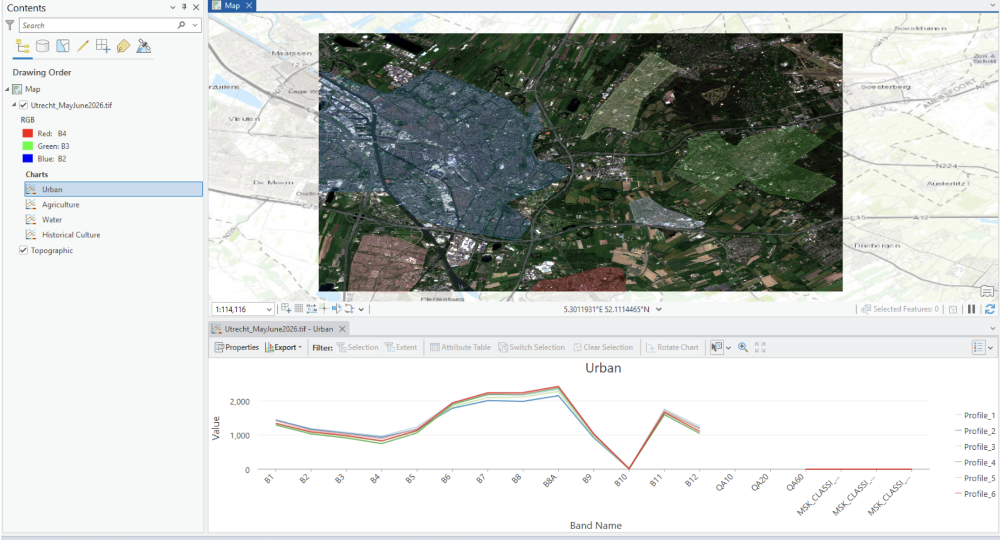
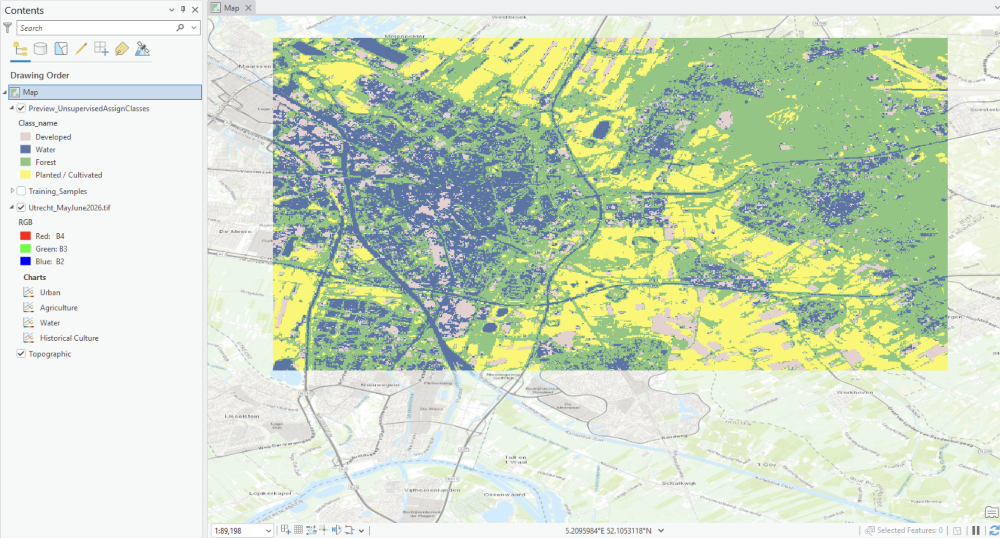
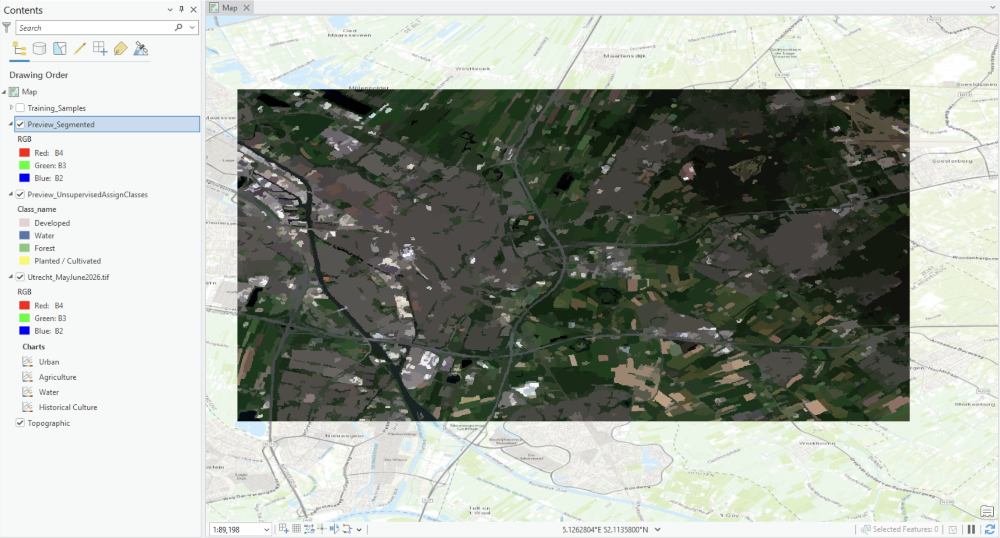
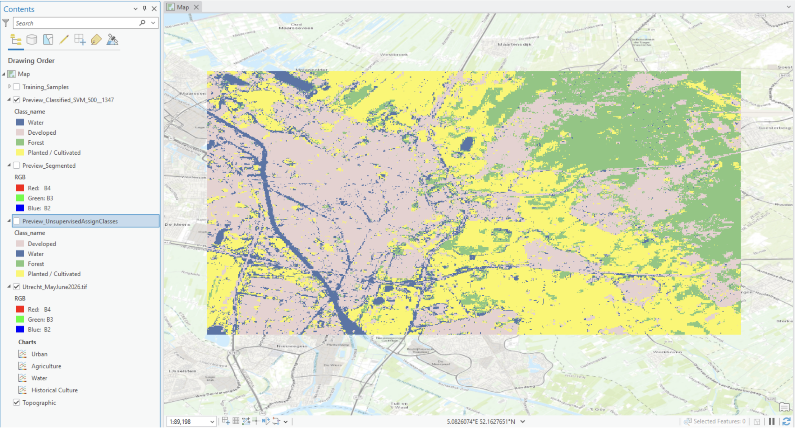

Beatriz de Araujo Possollo Soares
Image Classification
Automated land cover classficaiton was our 5th lab and it is a GIS method that uses satellite imagery tomap different forms of land cover such as forests, urban environments, bodies of water, agriculture and many other forms of land use. Automated land cover classficaitions are not manually configured, but rather utilise algortihsm to quickly sort through data which is useful for monitoring changes in land use over time. This aclffification system is valuable for various reasons. For starters, automated land use classficaition saves time since it is not done manually, and reduces costs, especially when handling large-scale mapping. Most importantly, automated land use classficaition is crucial in detetcing change in environments that may occurring due to urbanisation, deforestation, or habitat destruction.
In automated land cover classficaition, there are two primary approaches that are utilised: supverised and unsupervised. Supervised classification uses algorithms that are already trained with samples that represent different land use cover types (forests, urban areas, water, etc.). Supervised samples tend to be more accurate, however they also require more time to collect quality data sample. If the data quality is bad, the accuracy of supervised classification will reduce. On the other hand, unsupervised classification uses an algorithms that automatically groups similar pixels on the map and only later assigns a land use cover classficaition label. The unspverised clasficaition approach is typically far less accurate and requires further editing, but it is much faster and does not require prior training samples.
Approximate length and width of each pixel (the spatial resolution)
The approximate length and width of each pixel is 30.0m x 18.5m
Spectral profile with at least 4 different land covers

Unsupervised Pixel Based Classification

Unsupervised Object Based Classification

Supervised Pixel Based Classification
